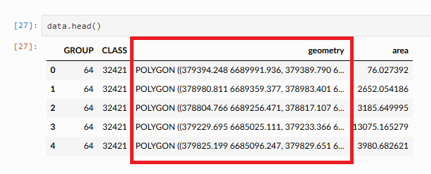

Introduction to data structures in geopandas#
Now that you have seen how to create and represent geometric objects in Python using shapely, we will continue on learning various GIS techniques using a library called geopandas [1]. geopandas is a library designed to make working with geospatial data in Python easier. It extends the data types used by pandas (which we covered in Part I) to allow geospatial operations and the handling of coordinate reference systems. Essentially, it provides a high-level interface for vector data (like points, lines, and polygons) that integrates with the existing pandas data analysis framework, as well as the extensive Python GIS ecosystem (see Figure 5.1 in Chapter 5). geopandas is one of the core libraries for GIS in Python and it is widely used in different sectors (academia, industry, etc.) for geographic data analysis. In the next sections, we will introduce the basic data structures that are used to work with geographic data using geopandas, namely GeoSeries and GeoDataFrame.
What is a GeoDataFrame?#
The main data structures in geopandas are GeoSeries and GeoDataFrame. Essentially, they extend the capabilities of the Series and DataFrame data structures of pandas. This means that we can use many familiar methods from pandas also when working with geopandas and geographic data. A GeoDataFrame is basically like a pandas.DataFrame that contains at least one dedicated column for storing geometries (see Figure 6.10). The geometry column is a GeoSeries which contains the geometries as shapely objects (points, lines, polygons, multipolygons etc.). As we learned in the previous section, shapely provides many useful attributes and methods to work with geometries. Luckily, these same functionalities can be directly applied to GeoSeries making it convenient to work with data layers that may contain thousands or even millions of geographic features. In this section, you will learn various useful techniques and tools bundled in geopandas that help you to work with geographic data in vector format.

Figure 6.10. Geometry column in a GeoDataFrame.
Reading a file#
Like with pandas, a typical first step when starting to work with geopandas is to read data from a given file. In geopandas, we can use a generic function .read_file() for reading geospatial data from various data formats, such as the ones introduced in Chapter 5. The data folder contains census data from Austin, Texas downloaded from the U.S Census bureau [2] which we will use to introduce some of the basic data input/output functionalities of geopandas. Let’s start by defining the path to the file that we want to access:
from pathlib import Path
data_folder = Path("data", "Austin")
fp = data_folder / "austin_pop_2019.gpkg"
print(fp)
data/Austin/austin_pop_2019.gpkg
Similar to importing pandas, we will first import geopandas as gpd which allows us to start using the library. Then we will read the file by passing the filepath to .read_file() function of geopandas:
import geopandas as gpd
data = gpd.read_file(fp)
You can use the .read_file() command in this way to read data from many different vector formats (GeoPackage, Shapefile, GeoJSON, etc.). Hence, it is very easy to start working with geographic data using geopandas. Let’s take a look at the data type of our data variable:
type(data)
geopandas.geodataframe.GeoDataFrame
Here we see that our data -variable is a GeoDataFrame which extends the functionalities of a DataFrame to handle spatial data as discussed earlier. We can apply many familiar pandas methods to explore the contents of our GeoDataFrame. Let’s have a closer look at the first rows of the data:
data.head()
| pop2019 | tract | geometry | |
|---|---|---|---|
| 0 | 6070.0 | 002422 | POLYGON ((615643.487 3338728.496, 615645.477 3... |
| 1 | 2203.0 | 001751 | POLYGON ((618576.586 3359381.053, 618614.33 33... |
| 2 | 7419.0 | 002411 | POLYGON ((619200.163 3341784.654, 619270.849 3... |
| 3 | 4229.0 | 000401 | POLYGON ((621623.757 3350508.165, 621656.294 3... |
| 4 | 4589.0 | 002313 | POLYGON ((621630.247 3345130.744, 621717.926 3... |
We can see that there are three columns in our GeoDataFrame. The columns pop2019 and tract represent attribute information in our data, namely the number of people living on a given census tract and a unique id-number for the tract, wherease the column geometry contains the geographic data (polygons) for each census tract.
It is always a good idea to explore your geographic data on a map. Creating a simple map from a geodataframe is really easy. You can use the .plot() method bundled in the GeoDataFrame instance to create a map based on the geometries of the data. Under the hood, geopandas actually uses matplotlib for plotting which we introduced in Part 1 of this book. Let’s try it out, and do a quick visualization of our data:
data.plot()
<Axes: >
Figure 6.11. Census tract polygons for Austin, Texas, USA.
Voilá! Here is our first map created with geopandas! This map gives a quick overview of how the geometries of the cencus tracts are located in the given region. The x and y axes in the plot are based on the coordinate values of the geometries which are in this case represented as meters.
Question 6.2#
Figure out the following information from our input data using your pandas skills:
Number of rows?
Number of census tracts (based on column
tract)?Total population (based on column
pop2019)?
Show code cell content
# Solution
print("Number of rows", len(data))
print("Number of census tract", data["tract"].nunique())
print("Total population", data["pop2019"].sum())
Number of rows 130
Number of census tract 130
Total population 611935.0
Geometries in geopandas#
By default, geopandas looks for the geometries from an attribute called .geometry, which is ultimately a GeoSeries data structure containing shapely geometric objects. In practice, the .geometry attribute links to a specific column in the GeoDataFrame. By default the geometries are stored into column named "geometry", when you read a file with geographic data. However, it’s good to be aware that a geodataframe can have multiple columns containing geometries, and you can change which column should be considered as the “active geometry” (see Chapter 6.3.7 for details). Let’s have a closer look at the .geometry attribute of our data:
data.geometry.head()
0 POLYGON ((615643.487 3338728.496, 615645.477 3...
1 POLYGON ((618576.586 3359381.053, 618614.33 33...
2 POLYGON ((619200.163 3341784.654, 619270.849 3...
3 POLYGON ((621623.757 3350508.165, 621656.294 3...
4 POLYGON ((621630.247 3345130.744, 621717.926 3...
Name: geometry, dtype: geometry
type(data.geometry)
geopandas.geoseries.GeoSeries
As we can see here, the geometry attribute contains polygon geometries stored in a GeoSeries data structure. The last output line of the .head() command reveals that the data type (dtype) of this column is geometry, i.e. geometries have their own data type. As we learned earlier, the shapely.geometry objects have various useful attributes and methods that we can use to work with geographic data. Luckily, it is possible to use these shapely methods directly in geopandas and apply them to a whole GeoSeries without a need to access individual geometries one by one. With this in mind, let’s proceed and extract information about the area of each census tract polygon. Extracting the area for all geometries in our data can be done easily by calling the attribute .area which is part of the GeoDataFrame object. As a reminder, the census data are in a metric coordinate reference system, so the area values will be given in square meters:
data.geometry.area
0 4.029772e+06
1 1.532030e+06
2 3.960344e+06
3 2.181762e+06
4 2.431208e+06
...
125 2.321182e+06
126 4.388407e+06
127 1.702764e+06
128 3.540893e+06
129 2.054702e+06
Length: 130, dtype: float64
The same result can be achieved by using the syntax data.area. Let’s convert the area values from square meters to square kilometers and store them into a new column called area_km2:
data["area_km2"] = data.area / 1000000
data.head()
| pop2019 | tract | geometry | area_km2 | |
|---|---|---|---|---|
| 0 | 6070.0 | 002422 | POLYGON ((615643.487 3338728.496, 615645.477 3... | 4.029772 |
| 1 | 2203.0 | 001751 | POLYGON ((618576.586 3359381.053, 618614.33 33... | 1.532030 |
| 2 | 7419.0 | 002411 | POLYGON ((619200.163 3341784.654, 619270.849 3... | 3.960344 |
| 3 | 4229.0 | 000401 | POLYGON ((621623.757 3350508.165, 621656.294 3... | 2.181762 |
| 4 | 4589.0 | 002313 | POLYGON ((621630.247 3345130.744, 621717.926 3... | 2.431208 |
As we can see, now we added a new column into our GeoDataFrame which contains the area of each polygon as square kilometers. Now you have succesfully conducted your first geocomputational analysis in Python! Quite easy isn’t it? We can also very easily visualize the data and make a nice choropleth map by using the area of a given geometry to determine the color for it. To do this, we can use the parameter column of the .plot() method in geopandas to specify that the color for each polygon should be based on the values stored in the area_km2 column:
data.plot(column="area_km2")
<Axes: >

Figure 6.12. A map showing census tracts colored based on the size of the polygon.
As a result, we can more easily spot the larger polygons from the map with brighter colors. There are various ways to modify the appearance of the map and colors, which we will learn later in Chapter 8.
Question 6.3#
Using your pandas skills, create a new column pop_density_km2 and populate it with population density values (population / km2) calculated based on columns pop2019 and area_km2. Print out answers to the following questions:
What was the average population density in 2019?
What was the maximum population density per census tract?
Show code cell content
# Solution
# Calculate population density
data["pop_density_km2"] = data["pop2019"] / data["area_km2"]
# Print out average and maximum values
print("Average:", round(data["pop_density_km2"].mean()), "pop/km2")
print("Maximum:", round(data["pop_density_km2"].max()), "pop/km2")
Average: 2397 pop/km2
Maximum: 11324 pop/km2
Writing data into a file#
In a similar way as reading data, writing the contents of your GeoDataFrame into a specific file is one of the most typical operations when working with geographic data. It is possible to export the GeoDataFrame into various data formats using the .to_file() method. Let’s start by learning how we can write data into a GeoPackage. Before proceeding, let’s see how the data looks like at this point:
data.head()
| pop2019 | tract | geometry | area_km2 | pop_density_km2 | |
|---|---|---|---|---|---|
| 0 | 6070.0 | 002422 | POLYGON ((615643.487 3338728.496, 615645.477 3... | 4.029772 | 1506.288769 |
| 1 | 2203.0 | 001751 | POLYGON ((618576.586 3359381.053, 618614.33 33... | 1.532030 | 1437.961408 |
| 2 | 7419.0 | 002411 | POLYGON ((619200.163 3341784.654, 619270.849 3... | 3.960344 | 1873.322183 |
| 3 | 4229.0 | 000401 | POLYGON ((621623.757 3350508.165, 621656.294 3... | 2.181762 | 1938.341868 |
| 4 | 4589.0 | 002313 | POLYGON ((621630.247 3345130.744, 621717.926 3... | 2.431208 | 1887.538655 |
Writing the contents of this GeoDataFrame into a file can be done using the .to_file() method. To use the method, we need to pass the filepath to the output file. For the most common geospatial file formats (e.g. GPKG, ESRI Shapefile, GeoJSON, GML, MapInfo File, FlatGeobuf), geopandas automatically identifies the correct file format based on the file extension that have been written after the dot in the file path. For instance in the example below, the text .gpkg at the end of the output_fp variable is sufficient to determine that the GeoDataFrame should be written in GeoPackage format:
# Create a output path for the data
output_fp = "data/Temp/austin_pop_density_2019.gpkg"
# Write the file
data.to_file(output_fp)
Now we have successfully stored the data into a file called austin_pop_density_2019.gpkg. To be more explicit, you can use the driver parameter to specify the output file format for the data allowing you to write the data into numerous data formats (some lesser-known ones as well) supported by a software called GDAL which is used by geopandas under the hood for reading and writing data. As an input, you should give the name of the driver as a string (see the names from GDAL documentation[3]), such as FlatGeobuf which is used to write the data into a performant FlatgeoBuf file format that supports fast reading and writing of geospatial data:
output_fp = "data/Temp/austin_pop_density_2019.fgb"
# Write the file
data.to_file(output_fp, driver="FlatGeobuf")
Whenever writing data, notice, that if you have an existing file with the same name, geopandas will automatically overwrite the contents (without asking). Hence, it is good to be a bit mindful about the naming of the files whenever writing data to disk. Some fileformats also supports appending to existing files. You can enable this functionality by using the mode parameter and specifying mode='a' which will add rows into an existing output file. Notice, that not all file formats support this functionality and if you do use this functionality, the data structure between the existing and the appended data should match.
Question 6.4#
Read the output file using geopandas and check that the data looks ok.
Show code cell content
# Solution
temp = gpd.read_file(output_fp)
# Check first rows
temp.head()
# You can also plot the data for a visual check by uncommenting the following
# temp.plot()
| Name | description | timestamp | begin | end | altitudeMode | tessellate | extrude | visibility | drawOrder | icon | pop2019 | tract | area_km2 | geometry | |
|---|---|---|---|---|---|---|---|---|---|---|---|---|---|---|---|
| 0 | None | None | NaT | NaT | NaT | None | -1 | 0 | -1 | NaN | None | 6070.0 | 002422 | 4.029772 | POLYGON Z ((-97.79891 30.17448 0, -97.79888 30... |
| 1 | None | None | NaT | NaT | NaT | None | -1 | 0 | -1 | NaN | None | 2203.0 | 001751 | 1.532030 | POLYGON Z ((-97.76612 30.36053 0, -97.76572 30... |
| 2 | None | None | NaT | NaT | NaT | None | -1 | 0 | -1 | NaN | None | 7419.0 | 002411 | 3.960344 | POLYGON Z ((-97.76163 30.20171 0, -97.76089 30... |
| 3 | None | None | NaT | NaT | NaT | None | -1 | 0 | -1 | NaN | None | 4229.0 | 000401 | 2.181762 | POLYGON Z ((-97.73545 30.28017 0, -97.73511 30... |
| 4 | None | None | NaT | NaT | NaT | None | -1 | 0 | -1 | NaN | None | 4589.0 | 002313 | 2.431208 | POLYGON Z ((-97.736 30.23166 0, -97.7351 30.23... |
Different file formats for reading and writing geographic data#
There exists numerous GIS data formats, such as GeoPackage [4], GeoJSON [5], KML [6], and Shapefile [7]. It is possible to read data from all these formats (plus many more) straight out of the box by geopandas. In the following, we will show some typical examples how to read (and write) data from different sources. The main point in this section is to demonstrate the basic syntax for reading and writing data using short code snippets.
Reading vector data#
When we use the .read_file() function for reading data in various formats, geopandas actually uses a Python library called pyogrio under the hood to read the data (which again depends on GDAL software written mostly in C++ language). This means that you can read and write all data formats that are supported by pyogrio. It is easy to find out all the data formats that are supported by default by calling pyogrio.list_drivers():
import geopandas as gpd
import pyogrio
available_drivers = pyogrio.list_drivers()
print(available_drivers)
len(available_drivers)
{'FITS': 'rw', 'PCIDSK': 'rw', 'netCDF': 'rw', 'PDS4': 'rw', 'VICAR': 'rw', 'JP2OpenJPEG': 'r', 'PDF': 'rw', 'MBTiles': 'rw', 'TileDB': 'rw', 'BAG': 'rw', 'EEDA': 'r', 'OGCAPI': 'r', 'ESRI Shapefile': 'rw', 'MapInfo File': 'rw', 'UK .NTF': 'r', 'LVBAG': 'r', 'OGR_SDTS': 'r', 'S57': 'rw', 'DGN': 'rw', 'OGR_VRT': 'r', 'Memory': 'rw', 'CSV': 'rw', 'NAS': 'r', 'GML': 'rw', 'GPX': 'rw', 'LIBKML': 'rw', 'KML': 'rw', 'GeoJSON': 'rw', 'GeoJSONSeq': 'rw', 'ESRIJSON': 'r', 'TopoJSON': 'r', 'Interlis 1': 'rw', 'Interlis 2': 'rw', 'OGR_GMT': 'rw', 'GPKG': 'rw', 'SQLite': 'rw', 'WAsP': 'rw', 'PostgreSQL': 'rw', 'OpenFileGDB': 'rw', 'DXF': 'rw', 'CAD': 'r', 'FlatGeobuf': 'rw', 'Geoconcept': 'rw', 'GeoRSS': 'rw', 'VFK': 'r', 'PGDUMP': 'rw', 'OSM': 'r', 'GPSBabel': 'rw', 'OGR_PDS': 'r', 'WFS': 'r', 'OAPIF': 'r', 'EDIGEO': 'r', 'SVG': 'r', 'Idrisi': 'r', 'XLS': 'r', 'ODS': 'rw', 'XLSX': 'rw', 'Elasticsearch': 'rw', 'Carto': 'rw', 'AmigoCloud': 'rw', 'SXF': 'r', 'Selafin': 'rw', 'JML': 'rw', 'PLSCENES': 'r', 'CSW': 'r', 'VDV': 'rw', 'GMLAS': 'r', 'MVT': 'rw', 'NGW': 'rw', 'MapML': 'rw', 'GTFS': 'r', 'PMTiles': 'rw', 'JSONFG': 'rw', 'MiraMonVector': 'rw', 'TIGER': 'r', 'AVCBin': 'r', 'AVCE00': 'r', 'HTTP': 'r'}
78
As we can see from this dictionary, by default there are close to 80 different file formats that are supported for reading data. In the list of supported drivers, r is for file formats that pyogrio/geopandas can be read, and w is for file formats it can write. Letter a marks formats for which pyogrio/geopandas can append new data to existing files. Let’s read the same Austin census data in a Shapefile format to see the basic syntax:
# Read Esri Shapefile
fp = data_folder / "austin_pop_2019.shp"
data = gpd.read_file(fp)
data.head()
| fid | pop2019 | tract | geometry | |
|---|---|---|---|---|
| 0 | 1.0 | 6070.0 | 002422 | POLYGON ((615643.487 3338728.496, 615645.477 3... |
| 1 | 2.0 | 2203.0 | 001751 | POLYGON ((618576.586 3359381.053, 618614.33 33... |
| 2 | 3.0 | 7419.0 | 002411 | POLYGON ((619200.163 3341784.654, 619270.849 3... |
| 3 | 4.0 | 4229.0 | 000401 | POLYGON ((621623.757 3350508.165, 621656.294 3... |
| 4 | 5.0 | 4589.0 | 002313 | POLYGON ((621630.247 3345130.744, 621717.926 3... |
As you can see, nothing except the file extension at the end of the filename changed, from .gpkg into .shp. The same syntax works for other common vector data formats, such as GeoJSON or MapInfo TAB format:
# Read file from Geopackage
fp = data_folder / "austin_pop_2019.gpkg"
data = gpd.read_file(fp)
# Read file from GeoJSON
fp = data_folder / "austin_pop_2019.geojson"
data = gpd.read_file(fp)
# Read file from Geodatabase
fp = data_folder / "austin_pop_2019.gdb"
data = gpd.read_file(fp)
# Read file from KML
fp = "data/Austin/austin_pop_2019.kml"
data_kml = gpd.read_file(fp)
# Read file from MapInfo TAB
fp = data_folder / "austin_pop_2019.tab"
data = gpd.read_file(fp)
data.head()
| fid | pop2019 | tract | geometry | |
|---|---|---|---|---|
| 0 | 1.0 | 6070.0 | 002422 | POLYGON ((615643.49 3338728.49, 615645.48 3338... |
| 1 | 2.0 | 2203.0 | 001751 | POLYGON ((618576.59 3359381.06, 618614.33 3359... |
| 2 | 3.0 | 7419.0 | 002411 | POLYGON ((619200.16 3341784.65, 619270.85 3341... |
| 3 | 4.0 | 4229.0 | 000401 | POLYGON ((621623.75 3350508.16, 621656.29 3350... |
| 4 | 5.0 | 4589.0 | 002313 | POLYGON ((621630.24 3345130.75, 621717.92 3345... |
Some file formats such as GeoPackage may contain multiple layers with different names which can be speficied using the layer -parameter. Our example geopackage file has only one layer with the same name as the file, so we don’t actually need to specify it to read in the data, but we can of course:
# Read spesific layer from Geopackage
fp = data_folder / "austin_pop_2019.gpkg"
data = gpd.read_file(fp, layer="austin_pop_2019")
Note that the KML file format is a bit of a special case as it is designed for Google Earth rendering in 3D, so there may be additional data columns read into the geodataframe:
data_kml.head()
| Name | description | timestamp | begin | end | altitudeMode | tessellate | extrude | visibility | drawOrder | icon | pop2019 | tract | geometry | |
|---|---|---|---|---|---|---|---|---|---|---|---|---|---|---|
| 0 | None | None | NaT | NaT | NaT | None | -1 | 0 | -1 | NaN | None | 6070.0 | 002422 | POLYGON Z ((-97.79891 30.17448 0, -97.79888 30... |
| 1 | None | None | NaT | NaT | NaT | None | -1 | 0 | -1 | NaN | None | 2203.0 | 001751 | POLYGON Z ((-97.76612 30.36053 0, -97.76572 30... |
| 2 | None | None | NaT | NaT | NaT | None | -1 | 0 | -1 | NaN | None | 7419.0 | 002411 | POLYGON Z ((-97.76163 30.20171 0, -97.76089 30... |
| 3 | None | None | NaT | NaT | NaT | None | -1 | 0 | -1 | NaN | None | 4229.0 | 000401 | POLYGON Z ((-97.73545 30.28017 0, -97.73511 30... |
| 4 | None | None | NaT | NaT | NaT | None | -1 | 0 | -1 | NaN | None | 4589.0 | 002313 | POLYGON Z ((-97.736 30.23166 0, -97.7351 30.23... |
However, it easy to filter the extra columns and only keep the ones that we are interested in:
data = data_kml[["pop2019", "tract", "geometry"]].copy()
data.head(2)
| pop2019 | tract | geometry | |
|---|---|---|---|
| 0 | 6070.0 | 002422 | POLYGON Z ((-97.79891 30.17448 0, -97.79888 30... |
| 1 | 2203.0 | 001751 | POLYGON Z ((-97.76612 30.36053 0, -97.76572 30... |
Reading from a ZIP file#
Lastly, we demonstrate how it is possible to read data directly from a ZIP file format which can be quite useful especially if you are working with large datasets or a collection of multiple files stored into a single ZIP archive. ZIP file is an archive data format where the data is compressed efficiently. For instance, after zipping Shapefiles, the disk space needed to store the data in the given format will be significantly lower. To read the data from ZIP files, we can use the built-in Python library called zipfile and its ZipFile object which makes it possible to work with compressed ZIP files. The following example shows how to read data from a compressed ZIP file. Let’s start by opening the file into a variable z and then read the names of the files stored inside the archive with the method .namelist():
from zipfile import ZipFile
fp = "data/Helsinki/building_points_helsinki.zip"
with ZipFile(fp) as z:
print(z.namelist())
['building_points_helsinki.gpkg']
As you can see, the given ZipFile which is opened in variable z contains only a single GeoPackage called building_points_helsinki.gpkg. The with ZipFile(fp) as z: command here is a standard Python convention to open files in read-format from ZIP files.
Now as we know the contents of the ZIP file, it is easy to read the contents of the building_points_helsinki.gpkg stored inside the file using geopandas. When there is only one file inside the ZIP archive and there are no subfolders inside (as in this example), you can read the content directly into a GeoDataFrame using the .read_file() function:
buildings = gpd.read_file(fp)
buildings.head(2)
| name | geometry | |
|---|---|---|
| 0 | None | POINT (24.85584 60.20727) |
| 1 | Uimastadion | POINT (24.93045 60.18882) |
Ta-da! Now we have succesfully read the GeoPackage from the given ZIP file into a variable buildings.
However, sometimes you might have multiple files and folders stored inside a ZIP archive as in the example below:
fp = "data/Helsinki/Kamppi_layers.zip"
with ZipFile(fp) as z:
print(z.namelist())
['natural/', 'natural/Kamppi_parks.gpkg', 'built_environment/', 'built_environment/Kamppi_buildings.gpkg', 'built_environment/Kamppi_roads.gpkg']
As can be seen from here, there are two folders inside the ZIP archive: natural/ and built_environment/. These subfolders contain three different GeoPackages (data for parks, buildings and roads). To be able to read the contents of these files, we need to create a filepath that points to a given file inside the ZIP archive considering the folder structure. This can be done easily with a special syntax in which we separate the actual filepath to the ZIP file on a local disk with ! (explanation mark) character from the folder and file structure inside the archive as follows:
parks_fp = "data/Helsinki/Kamppi_layers.zip!natural/Kamppi_parks.gpkg"
parks = gpd.read_file(parks_fp)
parks.head(2)
| osmid | leisure | name | geometry | |
|---|---|---|---|---|
| 0 | 8042256 | park | Pikkuparlamentin puisto | POLYGON ((385464.223 6672281.159, 385464.274 6... |
| 1 | 8042613 | park | Simonpuistikko | POLYGON ((385532.543 6672073.355, 385490.887 6... |
Here, the data/Helsinki/Kamppi_layers.zip part of the filepath points to the location of the ZIP file on the disk, whereas the !natural/Kamppi_parks.gpkg part corresponds to the structure inside the archive and points to the file that we want to read, i.e. Kamppi_parks.gpkg. This works similarly regardless of how many subfolders you have inside the ZIP file as long as the ! character is used to differentiate the contents of the archive from the location of the ZIP file stored on your computer. If you don’t have subfolders inside the ZIP archive but have multiple files stored at the root of the archive, you would just modify the filepath accordingly without the subfolder. In the following we demonstrate this by having two files at the root of the ZIP file and one file located deeper inside the folder structure:
data/My_archive.zip!My_first_datafile.gpkgdata/My_archive.zip!My_second_datafile.gpkgdata/My_arhive.zip!Subfolder/Another_folder/My_third_datafile.gpkg
Thus, in a similar manner, we can also read the two other files from the Kamppi_layers.zip ZIP archive:
roads_fp = "data/Helsinki/Kamppi_layers.zip!built_environment/Kamppi_roads.gpkg"
buildings_fp = "data/Helsinki/Kamppi_layers.zip!built_environment/Kamppi_buildings.gpkg"
roads = gpd.read_file(roads_fp)
buildings = gpd.read_file(buildings_fp)
buildings.head(2)
| osmid | building | name | geometry | |
|---|---|---|---|---|
| 0 | 11711721042 | yes | Nice Bike Pyörähuolto | POINT (384966.661 6671503.786) |
| 1 | 8035238 | public | Lasipalatsi | POLYGON ((385459.65 6672184.469, 385456.356 66... |
Writing to different vector data formats#
As we saw earlier, we can save spatial data to various vector data formats using the .to_file() method of the GeoDataFrame. Similarly as when reading data, this functionality also relies on the pyogrio library under the hood. When writing a GeoDataFrame into a file, in many cases, you only need to pass a filename/path to the .to_file() method, which will then write the data into the given fileformat based on the file extension information. However, for many file formats it is useful to specify the output file format using the driver parameter. In the following, we show the syntax for writing to many common geospatial data formats and use the driver parameter accordingly in each case:
# Write to Shapefile
outfp = "data/Temp/austin_pop_2019.shp"
data.to_file(outfp, driver="ESRI Shapefile")
# Write to MapInfo Tab
outfp = "data/Temp/austin_pop_2019.tab"
data.to_file(outfp, driver="MapInfo File")
# Write to Geopackage
outfp = "data/Temp/austin_pop_2019.gpkg"
data.to_file(outfp, driver="GPKG")
# Write to GeoJSON
outfp = "data/Temp/austin_pop_2019.geojson"
data.to_file(outfp, driver="GeoJSON")
# Write to KML
outfp = "data/Temp/austin_pop_2019.kml"
data.to_file(outfp, driver="LIBKML")
# Write to File Geodatabase
outfp = "data/Temp/austin_pop_2019.gdb"
data.to_file(outfp, driver="OpenFileGDB")
Creating a GeoDataFrame from scratch#
It is possible to create spatial data from scratch by using shapely’s geometric objects and geopandas. This is useful as it makes it easy to convert, for example, a text file that contains coordinates into geospatial data layers. Let’s first create a simple GeoDataFrame based on coordinate information that represents the outlines of the Senate square in Helsinki, Finland. The coordinates below demonstrates the corners of the Senate square, which we can use to create a Polygon object in a similar manner as we learned earlier in this chapter. The order of the coordinates should always follow longitude-latitude order (i.e. x and y coordinates):
from shapely.geometry import Polygon
coordinates = [
(24.950899, 60.169158),
(24.953492, 60.169158),
(24.953510, 60.170104),
(24.950958, 60.169990),
]
poly = Polygon(coordinates)
Now we can use this polygon and create a GeoDataFrame from scratch with geopandas. The data can be passed in as a list-like object. In our case, we will only have one row and one column of data. We can pass the polygon inside a list, and specify that this data is stored into a column called geometry so that geopandas will know to use the contents of that column as the source for geometries. Additionally, we could define the coordinate reference system for the data which we will learn in the next chapter.
newdata = gpd.GeoDataFrame(geometry=[poly])
newdata
| geometry | |
|---|---|
| 0 | POLYGON ((24.9509 60.16916, 24.95349 60.16916,... |
newdata.plot();
In this way, we can easily create a GeoDataFrame without any attribute data. However, quite often you also want to attach attribute information along with your geometry. We can create a GeoDataFrame from scratch with multiple attributes by passing a Python dictionary into the GeoDataFrame object as follows:
gdf_data = {
"geometry": [poly],
"name": "Senate Square",
"city": "Helsinki",
"year": 2023,
}
new_data_extended = gpd.GeoDataFrame(gdf_data)
new_data_extended
| geometry | name | city | year | |
|---|---|---|---|---|
| 0 | POLYGON ((24.9509 60.16916, 24.95349 60.16916,... | Senate Square | Helsinki | 2023 |
There it is! Now we have four columns in our data, one representing the geometry and other columns with additional attribute information.
Creating a GeoDataFrame from a text file#
One rather typical situation that you might encounter when working with your course mates or colleagues, is that you receive data that has coordinates but they are stored e.g. in a delimited textfile (or an Excel file). In this case, you cannot directly read the data into GeoDataFrame from the text file, but it needs to be converted into geospatial data using the coordinate information. In such a case, we can make use of the pandas, geopandas and shapely libraries for turning the data from a text file into a fully functional GeoDataFrame. To demonstrate this, we have some example data below that contains point coordinates of airports derived from openflights.org [8]. The operation of turning this data into a GeoDataFrame begins with reading the data with pandas into a DataFrame. Let’s read a couple of useful columns from the data for further processing:
import pandas as pd
airports = pd.read_csv(
"data/Airports/airports.txt",
usecols=["Airport ID", "Name", "City", "Country", "Latitude", "Longitude"],
)
airports.head()
| Airport ID | Name | City | Country | Latitude | Longitude | |
|---|---|---|---|---|---|---|
| 0 | 1 | Goroka Airport | Goroka | Papua New Guinea | -6.081690 | 145.391998 |
| 1 | 2 | Madang Airport | Madang | Papua New Guinea | -5.207080 | 145.789001 |
| 2 | 3 | Mount Hagen Kagamuga Airport | Mount Hagen | Papua New Guinea | -5.826790 | 144.296005 |
| 3 | 4 | Nadzab Airport | Nadzab | Papua New Guinea | -6.569803 | 146.725977 |
| 4 | 5 | Port Moresby Jacksons International Airport | Port Moresby | Papua New Guinea | -9.443380 | 147.220001 |
type(airports)
pandas.core.frame.DataFrame
len(airports)
7698
As we can see, now the data was read from a textfile into a regular pandas DataFrame. In a similar manner, you can read data with coordinates from numerous file formats supported by pandas. Our data covers over 7000 airports with specific attribute information including the coordinates in the Latitude and Longitude columns. We can use this coordinate information for turning this data into a GeoDataFrame and ultimately visualizing the data on a map. There is a handy function in geopandas called .points_from_xy() for generating an array of Point objects based on x and y coordinates. As usual, this function assumes that x-coordinates represent longitude and the y-coordinates represent latitude. The following code snippet shows how we can create geometries for the airports based on these coordinates:
airports["geometry"] = gpd.points_from_xy(
x=airports["Longitude"], y=airports["Latitude"]
)
airports = gpd.GeoDataFrame(airports)
airports.head()
| Airport ID | Name | City | Country | Latitude | Longitude | geometry | |
|---|---|---|---|---|---|---|---|
| 0 | 1 | Goroka Airport | Goroka | Papua New Guinea | -6.081690 | 145.391998 | POINT (145.392 -6.08169) |
| 1 | 2 | Madang Airport | Madang | Papua New Guinea | -5.207080 | 145.789001 | POINT (145.789 -5.20708) |
| 2 | 3 | Mount Hagen Kagamuga Airport | Mount Hagen | Papua New Guinea | -5.826790 | 144.296005 | POINT (144.29601 -5.82679) |
| 3 | 4 | Nadzab Airport | Nadzab | Papua New Guinea | -6.569803 | 146.725977 | POINT (146.72598 -6.5698) |
| 4 | 5 | Port Moresby Jacksons International Airport | Port Moresby | Papua New Guinea | -9.443380 | 147.220001 | POINT (147.22 -9.44338) |
type(airports)
geopandas.geodataframe.GeoDataFrame
The GeoDataFrame was created with a couple of steps. First, we created a new column called geometry into the DataFrame and used the .points_from_xy() function to turn the coordinates into shapely Point objects. At this stage, the data is still in a DataFrame format. The second command in the code snippet converts the pandas DataFrame into a GeoDataFrame which then has all the capabilities and tools bundled with geopandas. After these two steps, we have succesfully turned the data into geospatial format and we can for example plot the data on a map:
airports.plot(markersize=0.1);
Figure 6.13. A basic plot showing the airports from openflights.org.